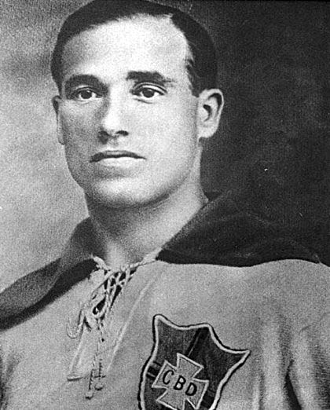
Neco
AtacanteUm dos primeiros grandes ídolos da história do Corinthians. Foi referência para as primeiras gerações de torcedores.
Time do povo
História, Títulos e notícias do Timão
O Sport Club Corinthians Paulista, fundado em 1º de setembro de 1910, é um dos maiores e mais tradicionais clubes de futebol do Brasil. Criado por trabalhadores no bairro do Bom Retiro, em São Paulo, o Corinthians nasceu com uma forte ligação com as classes populares e, ao longo de sua história, tornou-se conhecido como o "Time do Povo".
Desde sua fundação, o Corinthians construiu uma identidade baseada não apenas em títulos, mas também na paixão de sua torcida. A Fiel Torcida, como é conhecida, tornou-se uma das maiores marcas do clube e possui uma relação única com o time, permanecendo ao seu lado tanto nos momentos de glória quanto nos períodos mais difíceis.
Ao longo de mais de um século, o Corinthians conquistou importantes títulos estaduais, nacionais, continentais e mundiais. Entre suas principais conquistas estão sete Campeonatos Brasileiros, quatro Copas do Brasil, duas Libertadores, dois Mundiais de Clubes da FIFA e duas Supercopas do Brasil.
Entre os momentos mais marcantes de sua história estão o fim do jejum de quase 23 anos sem conquistar o Campeonato Paulista, em 1977, o movimento da Democracia Corinthiana na década de 1980, o primeiro Campeonato Brasileiro em 1990, o Mundial de Clubes de 2000, a conquista da Libertadores e do Mundial em 2012 e a reconstrução após o rebaixamento para a Série B em 2007.
O Corinthians também possui uma das histórias mais importantes do futebol brasileiro fora do campo. A relação entre clube e torcida, a participação de jogadores em movimentos sociais e políticos e a importância das arquibancadas fizeram com que o Corinthians ultrapassasse os limites de um simples clube de futebol.
Sua casa atual é a Neo Química Arena, localizada em Itaquera, na Zona Leste de São Paulo. Inaugurado em 2014, o estádio tornou-se um dos principais símbolos da história moderna do clube e recebeu partidas da Copa do Mundo daquele ano.
Mais de um século depois de sua fundação, o Corinthians continua sendo uma instituição marcada por sua tradição, sua torcida e sua capacidade de transformar momentos de dificuldade em grandes capítulos de sua história. Para milhões de pessoas, ser corinthiano não significa apenas torcer por um time, mas fazer parte de uma história que passa de geração em geração.
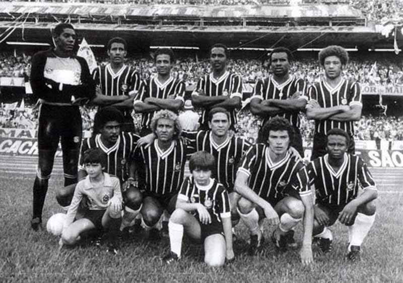
O Sport Club Corinthians Paulista foi fundado em 1º de setembro de 1910, no bairro do Bom Retiro, em São Paulo. O clube nasceu da iniciativa de cinco trabalhadores — Joaquim Ambrósio, Antônio Pereira, Carlos Silva, Anselmo Correia e Raphael Perrone — que desejavam criar uma equipe de futebol acessível às classes populares.
Inspirados pelo Corinthian Football Club, equipe inglesa que havia excursionado pelo Brasil naquele ano, os fundadores escolheram o nome Corinthians. Desde o início, o clube apresentou uma identidade diferente da maioria das equipes paulistas da época, sendo formado principalmente por trabalhadores e pessoas das camadas populares.
Em 1913, o Corinthians ingressou no futebol oficial de São Paulo e, apenas um ano depois, conquistou seu primeiro Campeonato Paulista. A equipe terminou a competição invicta, mostrando rapidamente que aquele clube criado no Bom Retiro poderia competir com as principais equipes da cidade.
Ao longo das décadas seguintes, o Corinthians se consolidou como uma das maiores forças do futebol paulista. O clube conquistou diversos títulos estaduais e construiu uma identidade fortemente ligada à sua torcida, que passou a ser conhecida como Fiel Torcida.
Um dos períodos mais marcantes aconteceu entre 1954 e 1977. Durante quase 23 anos, o Corinthians não conquistou o Campeonato Paulista. Mesmo assim, sua torcida continuou apoiando o clube e aumentando sua identificação com a equipe. Em 1977, o gol de Basílio contra a Ponte Preta encerrou o longo jejum e entrou para a história do futebol brasileiro.
Na década de 1980, o Corinthians protagonizou outro capítulo importante de sua história com a Democracia Corinthiana. Liderado por jogadores como Sócrates, Wladimir e Casagrande, o movimento defendia maior participação dos jogadores nas decisões do clube e tornou-se também um símbolo da luta pela redemocratização do Brasil.
A década de 1990 marcou a consolidação do Corinthians como potência nacional. Em 1990, o clube conquistou seu primeiro Campeonato Brasileiro. Posteriormente, venceu novamente a competição em 1998 e 1999, além da Copa do Brasil de 1995.
Em 2000, o Corinthians conquistou seu primeiro Mundial de Clubes da FIFA. A final foi disputada contra o Vasco da Gama, no Maracanã, e terminou empatada em 0 a 0 após a prorrogação. Nos pênaltis, o Corinthians venceu e conquistou um dos títulos mais importantes de sua história.
Em 2007, o clube viveu um dos momentos mais difíceis de sua trajetória ao ser rebaixado para a Série B do Campeonato Brasileiro. A torcida, porém, permaneceu ao lado da equipe. Em 2008, o Corinthians conquistou a Série B e retornou à elite do futebol brasileiro, iniciando uma nova fase de reconstrução.
O auge dessa reconstrução aconteceu em 2012. Depois de uma campanha invicta na Copa Libertadores, o Corinthians derrotou o Boca Juniors na final e conquistou pela primeira vez o título continental. No mesmo ano, venceu o Chelsea por 1 a 0 no Japão, com gol de Paolo Guerrero, e tornou-se bicampeão mundial.
A torcida sempre teve papel fundamental nessa história. Conhecida como Fiel, ela é reconhecida pela paixão e pelo apoio ao clube principalmente nos momentos mais difíceis. A relação entre Corinthians e torcida ultrapassa os resultados dentro de campo e é transmitida de geração em geração.
Atualmente, o Corinthians é uma das maiores instituições esportivas do Brasil. Sua história é marcada por títulos, grandes jogadores, momentos de sofrimento e conquistas históricas. Mais do que um clube de futebol, o Corinthians tornou-se parte da identidade de milhões de pessoas e continua sendo conhecido por uma de suas maiores características: ser o Time do Povo.
Estaduais, nacionais, continentais e mundiais — mais de um século de conquistas.
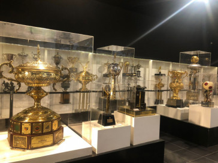
Ao longo de sua história, o Sport Club Corinthians Paulista conquistou diversos títulos importantes no futebol brasileiro e internacional. Suas conquistas incluem campeonatos estaduais, nacionais, continentais e mundiais, colocando o clube entre os maiores vencedores do futebol brasileiro.
O Campeonato Paulista é uma das competições mais importantes da história do Corinthians. O clube conquistou seu primeiro título estadual em 1914, apenas quatro anos depois de sua fundação.
Ao longo das décadas, o Corinthians acumulou diversas conquistas estaduais. Entre os títulos mais marcantes estão os de 1977, que encerrou um jejum de quase 23 anos, 1982, 1983, 1988, 1995, 1999, 2001, 2003, 2009, 2013, 2017, 2018, 2019 e 2025.
O título paulista de 2025 foi especialmente importante para a história recente do clube. O Corinthians voltou a conquistar o estadual e iniciou uma temporada que posteriormente seria marcada também pela conquista da Copa do Brasil.
O Corinthians conquistou seu primeiro Campeonato Brasileiro em 1990. Aquele título foi um dos maiores acontecimentos da história do clube, consolidando nacionalmente uma equipe que já possuía enorme tradição no futebol paulista.
Depois da conquista de 1990, o Corinthians voltou a vencer o Campeonato Brasileiro em 1998, 1999, 2005, 2011, 2015 e 2017, chegando ao total de sete títulos brasileiros.
A Copa do Brasil também possui grande importância na história corinthiana. O clube conquistou sua primeira edição em 1995, derrotando o Grêmio na final.
O Corinthians voltou a conquistar a competição em 2002 e 2009. Em 2025, o clube conquistou sua quarta Copa do Brasil, derrotando o Vasco da Gama na decisão. Com isso, o Corinthians passou a ter quatro títulos da competição: 1995, 2002, 2009 e 2025.
O Corinthians também possui duas conquistas da Supercopa do Brasil. A primeira aconteceu em 1991, quando o clube derrotou o Flamengo por 1 a 0, com gol de Neto.
Em 2026, o Corinthians voltou a conquistar a Supercopa. Na decisão, disputada contra o Flamengo, o Timão venceu por 2 a 0 e conquistou seu segundo título da competição. Com isso, passou a ter duas Supercopas do Brasil, em 1991 e 2026.
Durante décadas, a Libertadores foi considerada um dos grandes objetivos do Corinthians. A conquista finalmente aconteceu em 2012.
O Corinthians terminou aquela edição da competição de forma invicta e enfrentou o Boca Juniors na final. Depois de empatar por 1 a 1 na Argentina, o Corinthians venceu por 2 a 0 no Pacaembu, com dois gols de Emerson Sheik, conquistando sua primeira e, até o momento, única Copa Libertadores.
O Corinthians possui dois títulos mundiais reconhecidos pela FIFA. O primeiro aconteceu em 2000, na primeira edição do Mundial de Clubes disputada naquele formato.
Na final de 2000, disputada no Maracanã, o Corinthians enfrentou o Vasco da Gama. Depois de um empate sem gols, o Timão venceu nos pênaltis e conquistou seu primeiro Mundial.
O segundo título mundial veio em 2012, após a conquista da Libertadores. No Japão, o Corinthians derrotou o Chelsea por 1 a 0, com gol de Paolo Guerrero. A atuação do goleiro Cássio também foi fundamental para a conquista.
Em 2013, o Corinthians conquistou a Recopa Sul-Americana. O título foi disputado contra o São Paulo e marcou mais uma conquista internacional para o clube após a histórica temporada de 2012.
Em 2008, o Corinthians conquistou a Série B do Campeonato Brasileiro. O título veio depois do rebaixamento ocorrido em 2007 e marcou o retorno imediato do clube à primeira divisão nacional.
Atualmente, entre as principais conquistas do futebol masculino do Corinthians estão sete Campeonatos Brasileiros, quatro Copas do Brasil, duas Supercopas do Brasil, uma Libertadores, duas Copas do Mundo de Clubes da FIFA, uma Recopa Sul-Americana e um Campeonato Brasileiro da Série B.
Mais do que a quantidade de troféus, cada conquista possui um significado diferente para a torcida. Algumas encerraram longos períodos sem títulos, outras representaram a afirmação nacional ou internacional do clube, e algumas ficaram marcadas pela maneira como foram vividas pela Fiel Torcida.
Jogadores que marcaram época e deixaram seus nomes na história do Sport Club Corinthians Paulista.


Um dos primeiros grandes ídolos da história do Corinthians. Foi referência para as primeiras gerações de torcedores.
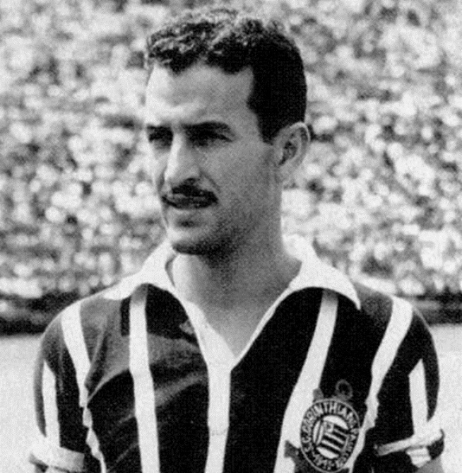
Considerado um dos maiores jogadores da história do clube, destacou-se pelo talento e pela capacidade de marcar gols.
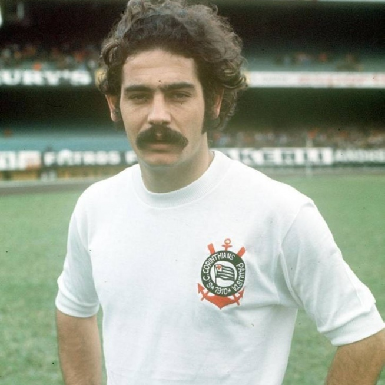
Um dos jogadores mais talentosos que já vestiram a camisa do Corinthians, conhecido pelo potente chute e habilidade.
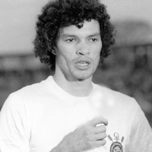
Ídolo histórico e líder da Democracia Corinthiana, marcado pela inteligência, liderança e habilidade.
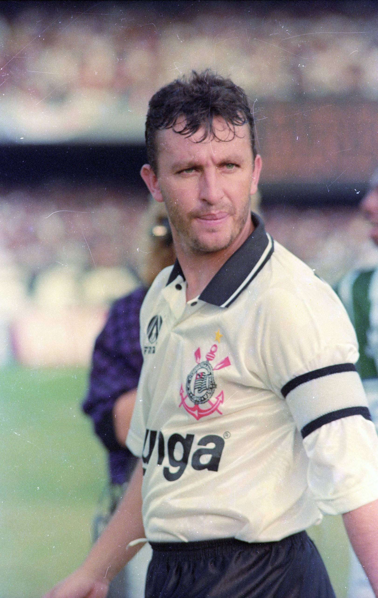
Principal símbolo do Corinthians na conquista do Campeonato Brasileiro de 1990 e especialista em cobranças de falta.

Um dos maiores jogadores da história recente do clube, conhecido pelas cobranças de falta e gols decisivos.
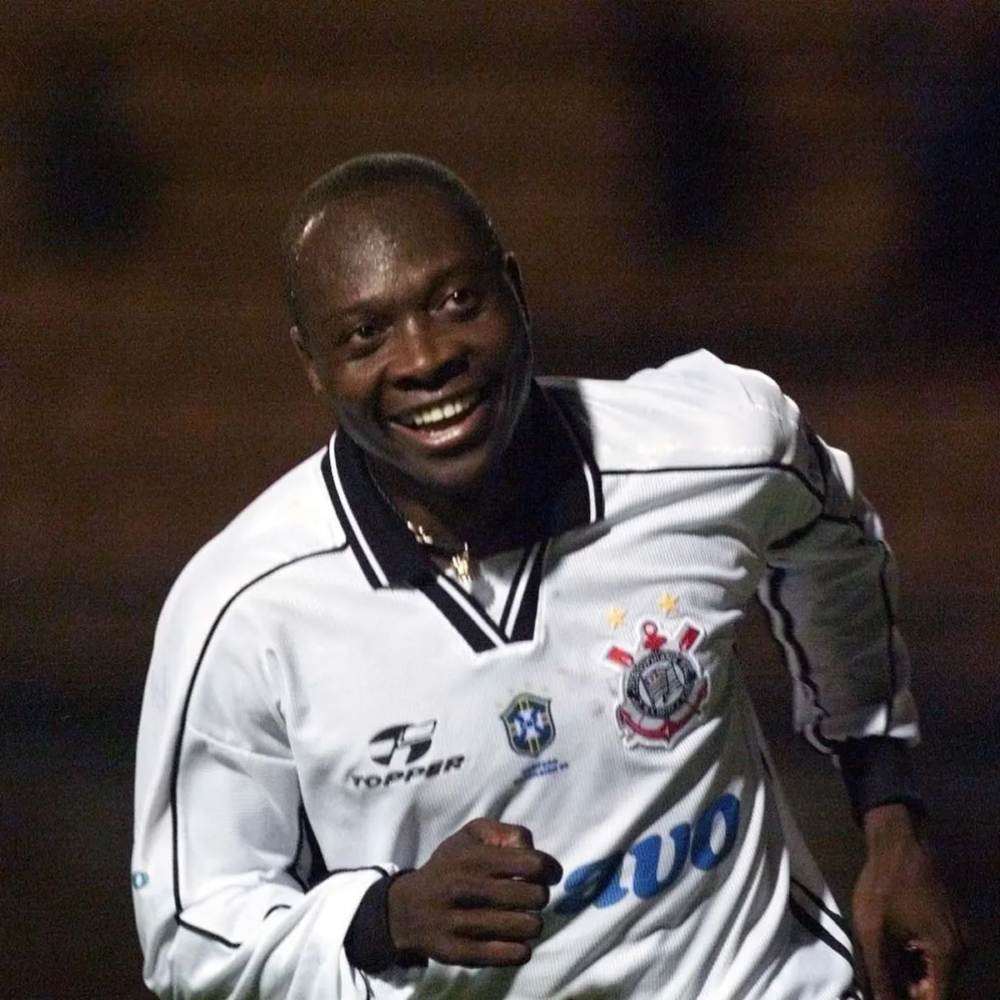
Grande líder da equipe nos anos 1990 e peça importante nas conquistas dos Brasileiros de 1998 e 1999.
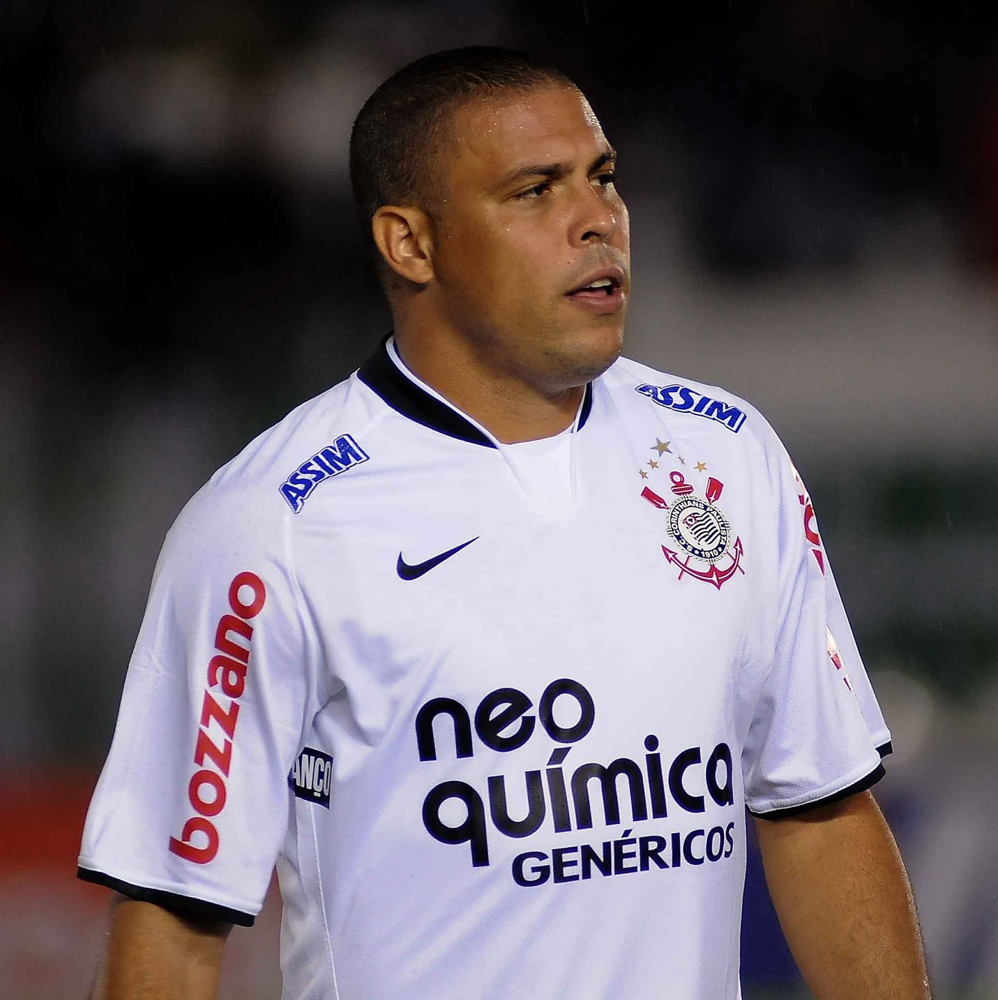
Fenômeno que chegou ao Corinthians em 2009 e ajudou o clube a conquistar o Paulista e a Copa do Brasil daquele ano.
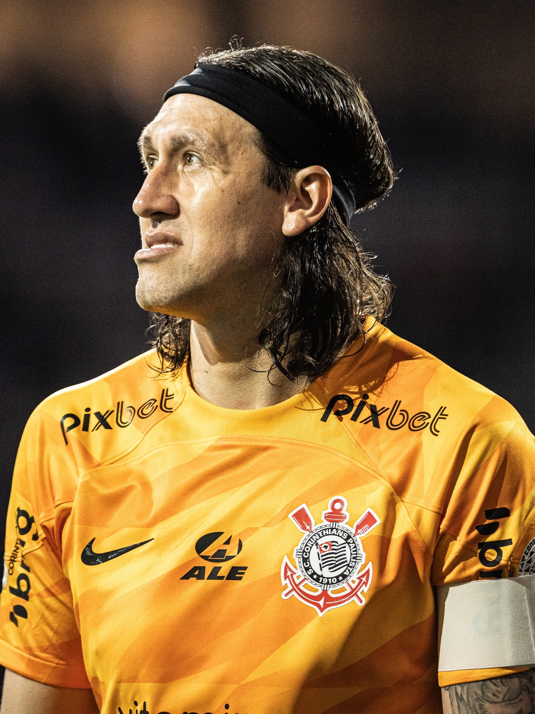
Um dos maiores ídolos da história moderna do Corinthians, protagonista nas conquistas da Libertadores e do Mundial de 2012.

Autor dos dois gols da final da Libertadores de 2012 contra o Boca Juniors.

Autor do gol que garantiu ao Corinthians o Mundial de Clubes de 2012 contra o Chelsea.
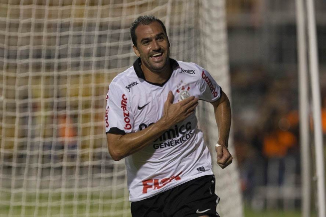
Jogador fundamental na era vitoriosa do clube, conhecido pela inteligência e tranquilidade nos momentos decisivos.
Conheça alguns dos jogadores que fazem parte do elenco do Corinthians.
Conheça o jogador que se destacou recentemente no elenco do Corinthians.